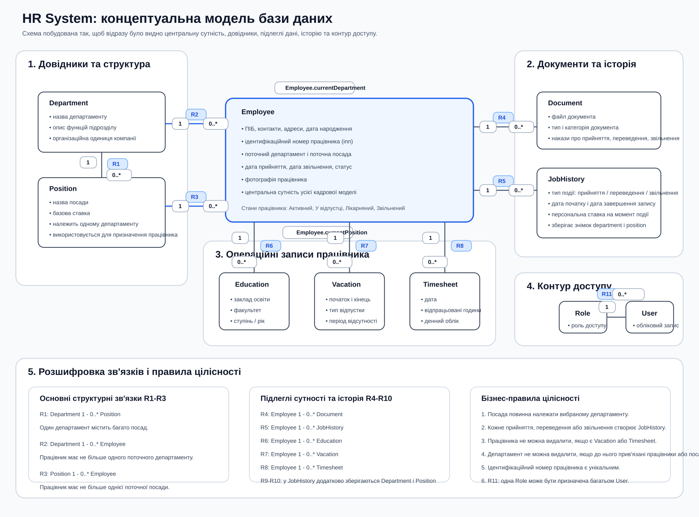
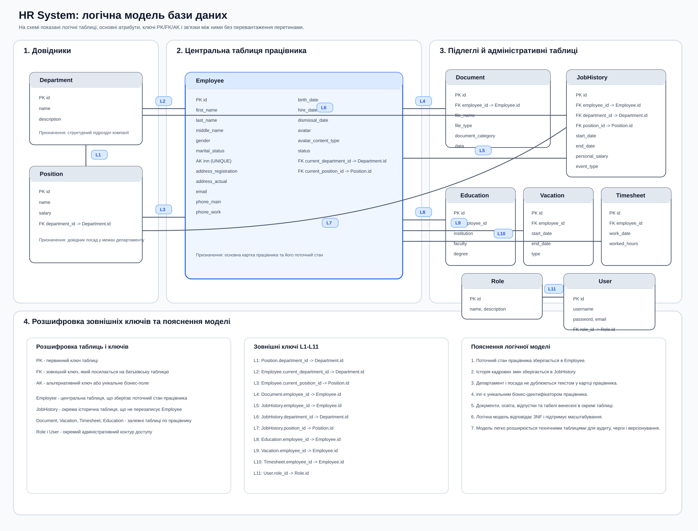
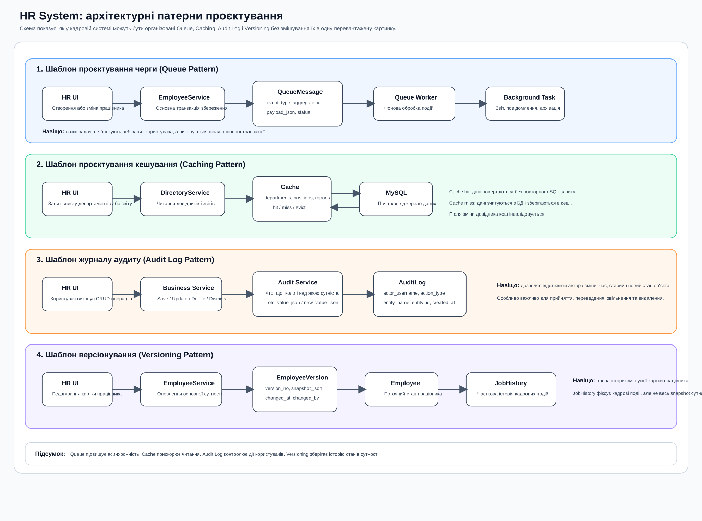

Що показувати викладачу
- Концептуальну схему предметної області.
- Логічну модель таблиць із PK/FK.
- Архітектурну схему патернів.
- Текстові пояснення з прикладами.
Це зведений матеріал для курсової роботи: окрема концептуальна ER-модель, окрема логічна модель бази даних, окрема архітектурна схема патернів і посилання на розширені текстові документи. Матеріал побудований так, щоб викладач міг читати його поступово, без перевантаження і без накладання блоків один на один.
Тут показані сутності предметної області, їх кратності та ключові бізнес-правила на верхньому рівні.

Тут показані логічні таблиці, атрибути, первинні ключі, зовнішні ключі та розшифровка зв'язків L1-L11.

Патерни винесені в окрему схему, щоб не змішувати бізнес-сутності БД і технічну архітектуру застосунку.

| Патерн | Проблема | Де використовується | Який артефакт підтримує |
|---|---|---|---|
| Queue | Не блокувати користувача важкою післяобробкою | Події після створення або зміни працівника | QueueMessage, worker |
| Caching | Зменшити повторні запити до БД | Довідники департаментів, посад, аналітичні звіти | Spring Cache / in-memory cache / Redis |
| Audit Log | Контроль і трасування дій користувачів | CRUD, login, переведення, звільнення | AuditLog |
| Versioning | Зберігати попередні стани сутності | Повна історія редагування картки працівника | EmployeeVersion, частково JobHistory |
Повний документ з концептуальною, логічною і фізичною моделлю:
Повний документ з Queue, Caching, Audit Log, Versioning і прикладами:
У папці drawio лежать готові Mermaid-файли. Вони вставляються в draw.io через Insert -> Advanced -> Mermaid.
{kind=link}
{kind=link}
{kind=link}